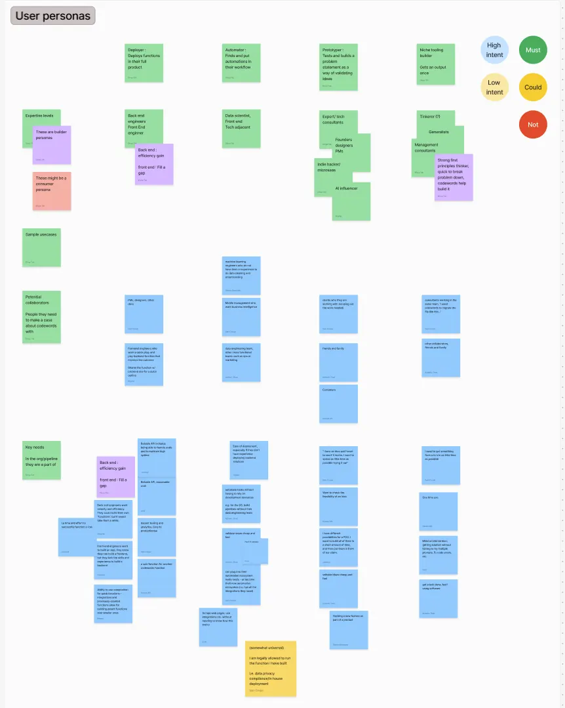
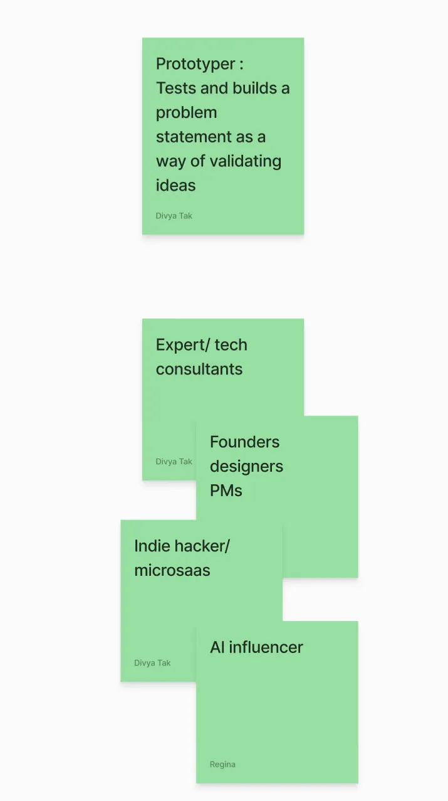
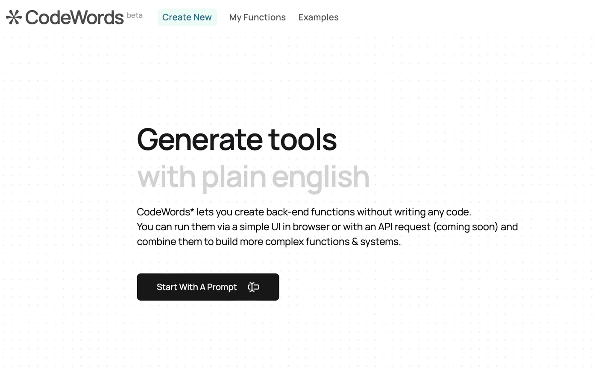
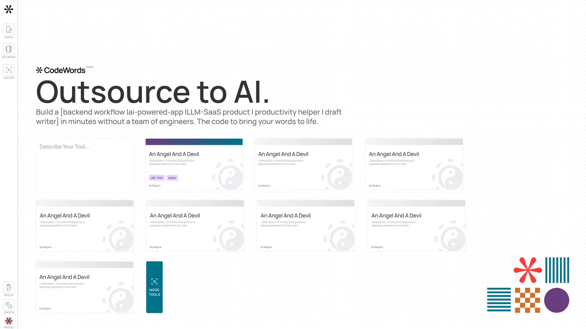
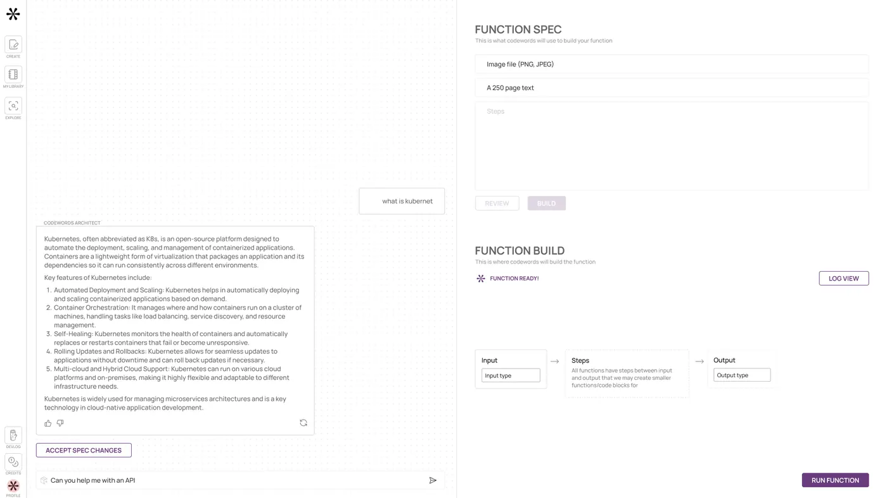
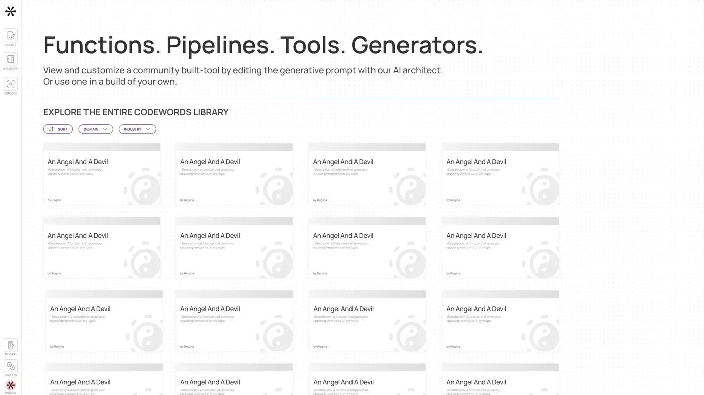
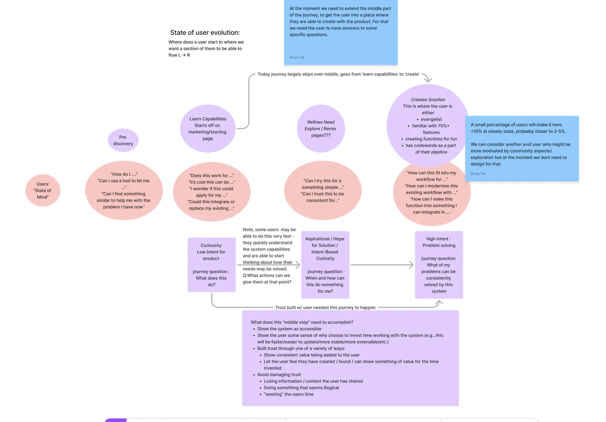
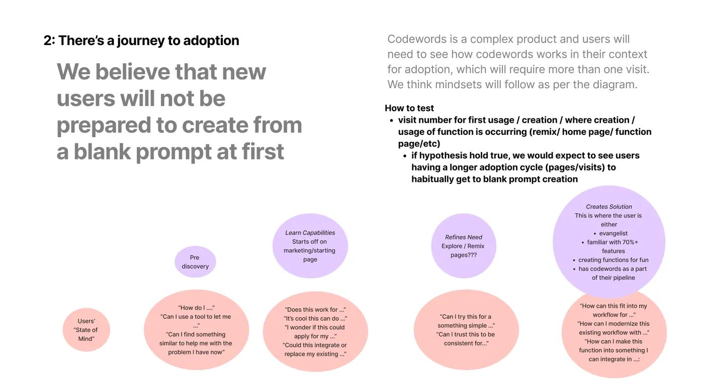

GenAI startup with a new way of coding requiring an unexpected user paradigm.
Research
Product Strategy
Interface Design
United Kingdom1–10 employeesPre-Series A
first — who's actually here?
agemoResearchProduct StrategyInterface Design
How do you teach people a new way of creating a tech-based process? To build and create with a new modality? Depending on who they are and what they are trying to do, the answer will be different. Creating user personas builds the shared understanding between team members needed to design a welcoming onboarding for all types of users.
comprehensive capture of the team's understanding of the needs of different types of users

zooming in on the traits, reasons and needs of the different personas

now let's redo the entry experience
rebuilding the front door
agemoResearchProduct StrategyInterface Design
Bringing this insight to the onboarding and landing pages meant redoing the user promise created early in the user flow — to create space for a person to find inspiration and refine their thinking about their problem before starting.
Refining the pages to support curiosity brings more kinds of people into the experience, even when they may not have an articulated need.
original version assumed the user was an expert with a focused need

persistent left-side navigation keeps grounding and context from the first screen
revised experience supports users with a more exploratory mindset

useful functions showcase the breadth and depth of the tool
rotating through specific supported workflows gives freshness and product depth
low-stakes call to action reduces barriers to enter the product flow
↓ then deeper into the toolset
tools to refine, not just generate
agemoResearchProduct StrategyInterface Design
The new interface supports refinement of the idea after the solution is generated, with users being guided on how to revise by community examples and the AI guide through the chat interface.

chat interface coaches users through initial creation, with a UX to support a user in the final refinement

a browsable library of functions shows the value of the product and gives more starting points for adapting a use case
visual grammar reinforces the refinement-oriented approach while holding values of space, flexibility and play
↓ but first — why the redo?
the missing step — refinement
agemoResearchProduct StrategyInterface Design
Our research revealed the missing step in Agemo's initial approach — space for refinement. Refinement includes both the idea, before starting, and the solution, after feedback. With space for refinement, we add the time needed for an idea to grow from a spark to a potential solution in the new paradigm.

where the team assumed users start
where the users actually start
product changes required to bring users to the point of creation from curiosity
↓ document the thinking, not just the build
writing down what we believe
agemoResearchProduct StrategyInterface Design
Often missed in the rush is the need to document assumptions and hypotheses. Good decomposition allows for validation and testing before the full investment required to get the product or company live.
Documentation of product discussions in a future-oriented way breaks the cycle of re-working and re-visiting the same tech + user experience when the team is growing and changing composition.

highlighting one of the hypotheses and the underpinning assumptions
detail of the hypothesis and assumptions guiding the approach and development
steps of the model that was constructed to guide the user experience
test cases that validate the underpinning assumption